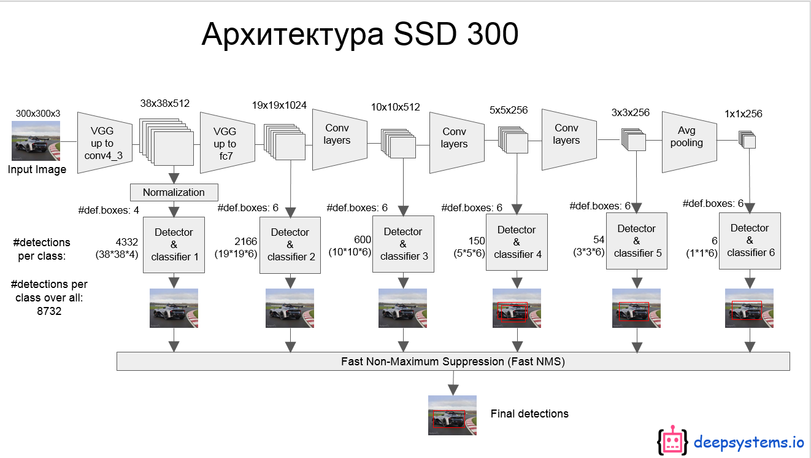
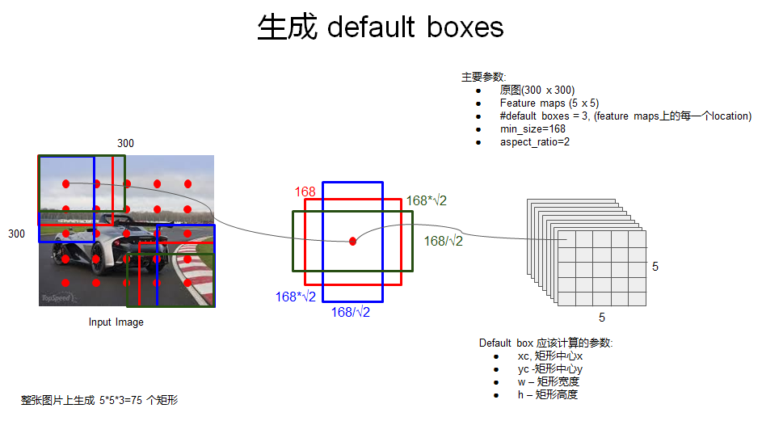
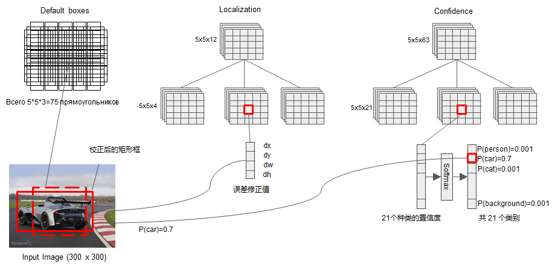
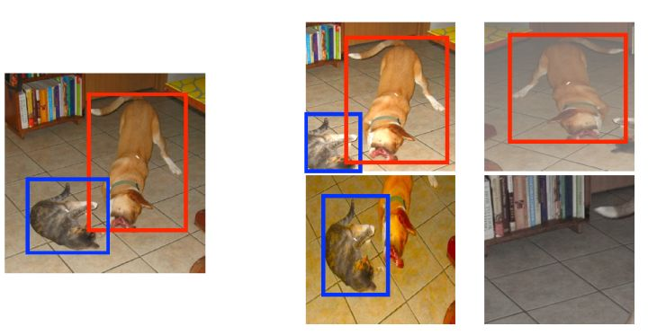

title: 目标检测:SSD
comments: true
mathjax: true
date: 2019-12-16 16:44:39
tags:
目标检测的算法主要分为两个：

从结构图中可以看出，网络的前半部分采用了VGG网络进行特征提取，SSD网络又在VGG后面添加了几个卷积层。不同的卷积层对应着不同的大小的特征图，然后在不同大小的特征图上生成anchor来进行分类和回归。这就是论文中的Multi-scale feature maps for detection多尺度特征图检测，网络的层数越深，特征图越小，感受野越大，检测的目标越大。下面就通过例子来详细看一下整个过程：
我们选择第四个特征图，它的大小是$5 \times 5$,通道数为256。对于这样一个特征图，我们可以理解为在它后面接上三个并行的层，分别用于生成anchor，bbox回归和分类。 SSD直接采用卷积($3\times 3$的卷积核)来对特征图的检测结果进行提取。我们假设在这一层，特征图上的每一个点有3个anchor。

将特征图上的点映射回原图坐标，并且根据不同的scale和aspect ratio生成bbox。那么如何来确定scale和aspect ratio呢？
对于scale，最小值文中设置为0.2，也就是感受野最小的特征图的anchor对应的scale为0.2，最大的scale为0.9。处于这中间的可以由下面的式子来计算：
其中m为特征图的数量
而aspect ratio设置为:$\{1,2,3,\frac{1}{2},\frac{1}{3}\}$
那么anchor的长宽就为 $w_{k}^{a}=s_{k} \sqrt{a}_{r}$ 和 $h_{k}^{a}=s_{k} / \sqrt{a}_{r}$
如图：

当然，在每个特征图回归后，使用nms筛选bbox，并且在所有特征图预测后再进行一个nms过滤bbox。
在了解网络的结构后看来看一下网络是如何训练的。
为了进行训练，我们首先要知道从网络生成出来的先验框应该和哪个ground truh进行匹配。在SSD中有两个原则:
这意味着某个ground truth可能与多个先验框匹配，但反过来却不可以。
同时，因为正负样本是数量的极不平衡，SSD采用hard negative mining，就是对负样本进行抽样，抽样时按照置信度误差（预测背景的置信度越小，误差越大）进行降序排列，选取误差的较大的top-k作为训练的负样本，以保证正负样本比例接近1:3。
损失函数定义为位置误差（locatization loss， loc）与置信度误差（confidence loss, conf）的加权和：
其中 N 是先验框的正样本数量。这里 $x$ 为一个指示参数，当 $x^{p}_{ij} = 1$ 时表示第 $i$ 个先验框与第 $j$ 个ground truth匹配，并且ground truth的类别为 $p$ 。 $c$ 为类别置信度预测值。 $l$ 为先验框的所对应边界框的位置预测值，而 $g$ 是ground truth的位置参数。位置误差同样使用smoothL1，分类误差采用softmax loss
主要采用的技术有水平翻转（horizontal flip），随机裁剪加颜色扭曲（random crop & color distortion），随机采集块域（Randomly sample a patch）（获取小目标训练样本），如下图所示：

参考资料:
https://arxiv.org/pdf/1512.02325.pdf